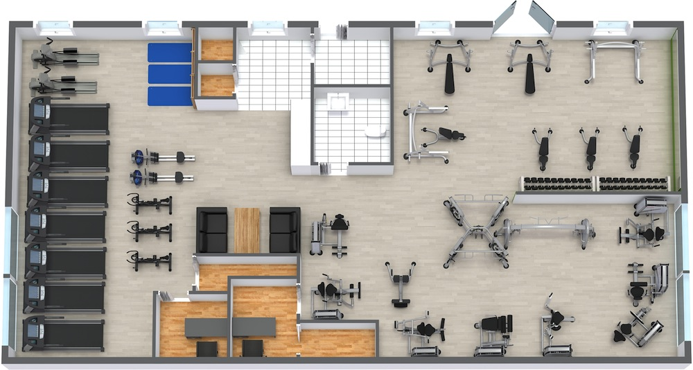

Click on the section to find out more
 Layout of the GymClick on the section to find out more

DUMBBELLS
The term "dumbbell" or "dumb bell" originated in late Stuart England. In 1711 the poet Joseph Addison mentioned exercising with a "dumb bell" in an essay published in The Spectator (1711). Although Addison elsewhere in the same publication describes having used equipment similar to the modern understanding of dumbbells, according to sport historian Jan Todd, the form of the first dumbbells remains unclear. The Oxford English Dictionary describes "apparatus similar to that used to ring a church bell, but without the bell, so noiseless or ‘dumb’", implying the action of pulling a bell rope to practise English bellringing.
TREADMILLS
A treadmill is a device generally for walking or running or climbing while staying in the same place. Treadmills were introduced before the development of powered machines, to harness the power of animals or humans to do work, often a type of mill that was operated by a person or animal treading steps of a treadwheel to grind grain. In later times, treadmills were used as punishment devices for people sentenced to hard labour in prisons. The terms treadmill and treadwheel were used interchangeably for the power and punishment mechanisms.
More recently, treadmills are not used to harness power, but as exercise machines for running or walking in one place. Rather than the user powering the mill, the machine provides a moving platform with a wide conveyor belt driven by an electric motor or a flywheel. The belt moves to the rear, requiring the user to walk or run at a speed matching that of the belt. The rate at which the belt moves is the rate of walking or running. Thus, the speed of running may be controlled and measured. The more expensive, heavy-duty versions are motor-driven (usually by an electric motor). The simpler, lighter, and less expensive versions passively resist the motion, moving only when walkers push the belt with their feet. The latter are known as manual treadmills.

SQUAT RACKS
The parallel back squat
In strength training and fitness, the squat is a compound, full body exercise that trains primarily the muscles of the thighs, hips and buttocks, quadriceps femoris muscle (vastus lateralis, vastus medialis, vastus intermedius and rectus femoris), hamstrings, as well as strengthening the bones, ligaments and insertion of the tendons throughout the lower body. Squats are considered a vital exercise for increasing the strength and size of the legs as well as developing core strength. Squats are typically used to hone back, thigh, and hip stability.Isometrically, the lower back, the upper back, the abdominals, the trunk muscles, the costal muscles, and the shoulders and arms are all essential to the exercise and thus are trained when squatting with the proper form.